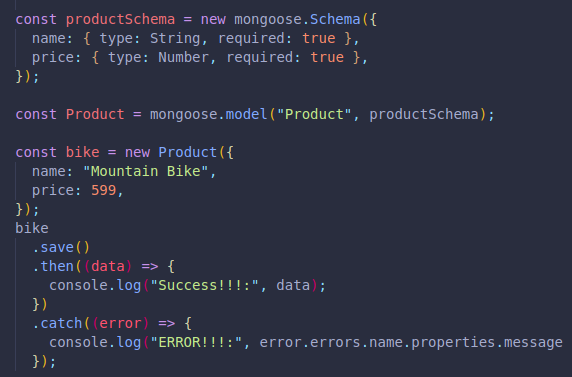
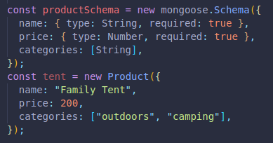
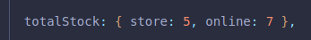
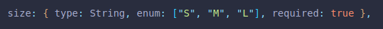
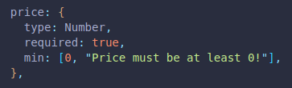
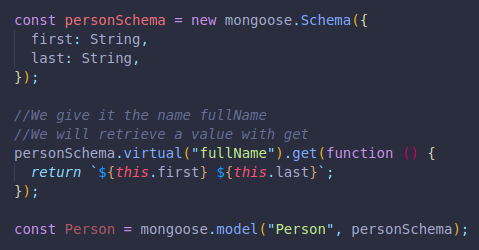

Operation buffering helps us run our code after our server starts successfully.
By using validations in our schema, we can make sure certain values are required, producing an error when not.
(The shorthand is not doing this.)
We simply need to include the value as a type inside curly brackets, and we can now add required and set it to true:
(Here we are also logging the exact error, if one is to be returned.)
If we were to pass in a number inside a string for price, it would attempt to convert it to a number, but if even that fails, we would be returned an error.
This helps us guarantee that our schema is followed strictly, leaving less room for future problems with our objects.
If we include additional key value pairs that are not included in our schema, they will be ignored.
We can also create an array of strings like this:
It can be helpful to set tags on each product to later filter through them.
(If we pass a number, it will be converted to a string.)
We can also create a key in our schema with a value set to an object with as many key pair values as we want nested inside, like a online stock vs local/warehouse stock.
THere are options for our schemas like required we can include to meet our needs more efficiently.
default:false for a type:boolean will set our key to false automatically, unless we set true.
Here are a few examples:
For string there is lowercase:, uppercase:, trim: (excess space at end and beginning), maxLength:/minLength: for a number of characters, match: for a specific pattern.
For numbers there is min:/max:.
enum: Will make sure we are picking from one of the options we choose for the key in our schema:
Validations apply automatic when we are creating new objects, but not when we are updating a value.
To fix this, we must run our update method and include runValidators:true in our third argument (Where we would set new:true to see a visual of the post-updated object we changed.).
We can set default error messages if a key value we enter does not conform to our schema. We just need to set the value of the key to an array, where the first argument will be the desired validation , and the second a string with our message.
These are available in every Model instance (Any new variable that follows are defined schema).
It is recommended to use a traditional function instead of an arrow function due to the meaning of the keyword this if used.
These methods are created by us to be ran on all our instances, saving us time too. We must use the word .methods followed by the function name.
productSchema.methods.ourFunction = function(newCategory){this.categories.push(newCategory); return this.save();}
These methods are called directly from the model, and the keyword this refers to the whole Model.
We must use the word .statics followed by the function name.
It runs on the Model in general, not a specific instance.
These allow us to create properties for our instances that can be called when we want, here we have an example with string literal templates to display a full name, borrowing values from our object.
We can now access the string with instanceName.fullName
This new property only exists in the Mongoose side, not in our database.
We can give set a value too, not just get. This will allow us to update a value from our string.
We can run code before and after certain methods are called. Like after something is saved or deleted.
The middleware uses pre-hooks and post-hooks.
An example is when a user deletes their account, the social media also will delete all the picturers, posts, etc.
We do these things with .pre() and .post(), we include them after our schema variable. They will take two arguments, the first id¿s for the action we are waiting for to happen, like save,delete,update,etc. The second is an async function where we will code what should happen next.
It can be useful, even though it happens so fast that we can not really tell the order in which things happened.